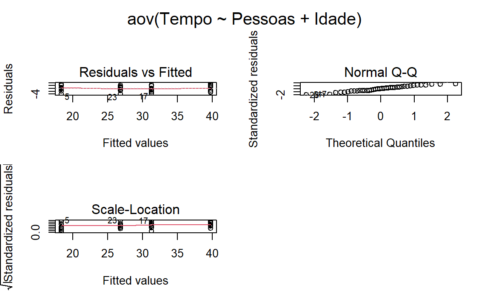
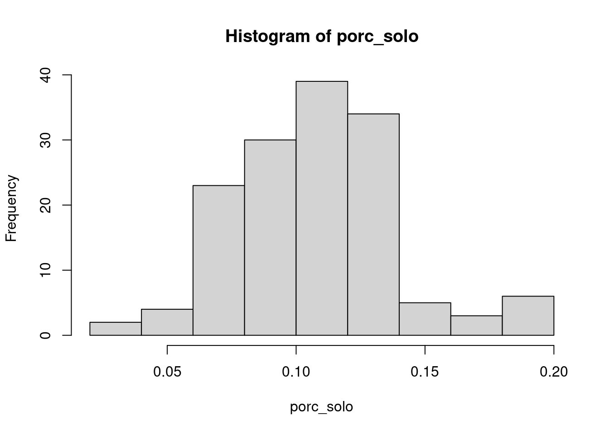
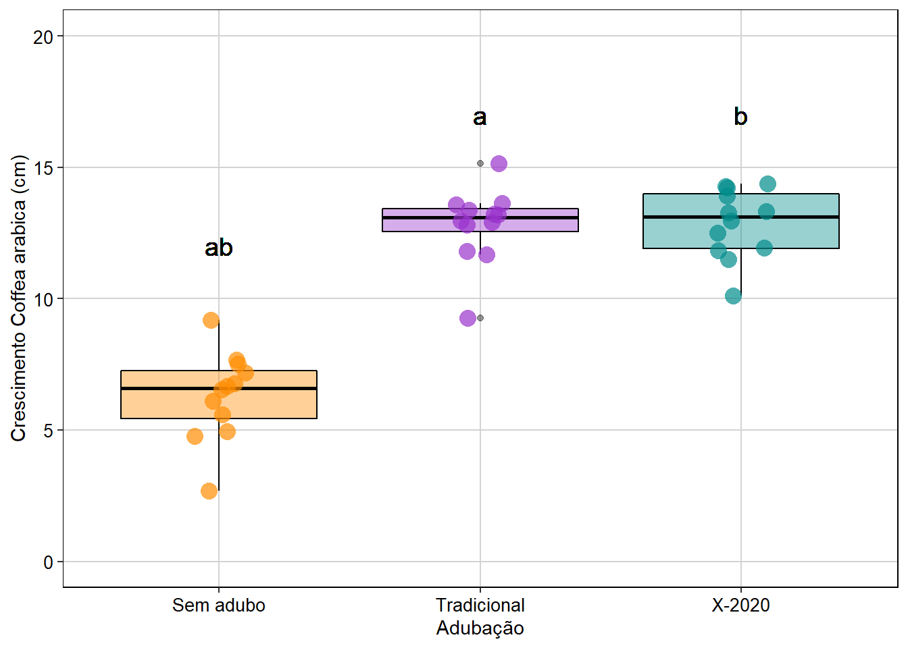

7.8 ANOVA com dois fatores ou ANOVA fatorial
Este teste considera delineamentos amostrais com dois fatores (ou tratamentos) que podem ser compostos por dois ou mais grupos (ou níveis). Esta análise tem uma vantagem, pois permite avaliar o efeito da interação entre os fatores na variável resposta. Quando a interação está presente, o impacto de um fator depende do nível (ou grupo) do outro fator.
7.8.0.1 Exemplo prático 1 - ANOVA com dois fatores
Explicação dos dados
Neste exemplo, avaliaremos se o tempo que o corpo leva para eliminar uma droga utilizada em exames de ressonância magnética está relacionado com o sistema XY de determinação do sexo e/ou com a idade dos pacientes. Para isso, foi realizado um experimento com 40 pacientes distribuídos da seguinte maneira: i) 10 indivíduos XX - jovens, ii) 10 indivíduos XX - idosas, iii) 10 indivíduos XY - jovens, e iv) 10 indivíduos XY - idosos.
Pergunta:
O tempo de eliminação da droga é dependente do sistema XY de determinação do sexo e idade dos pacientes?
Predições
O tempo de eliminação da droga vai ser mais rápido nas pacientes XX e jovens.
Variáveis
Variáveis resposta e preditoras
- Dataframe com os pacientes (unidade amostral) nas linhas e o tempo de eliminação da droga (variável resposta) e os tratamentos sexo e idade dos pacientes (variáveis preditoras) nas colunas.
Checklist
- Verificar se o seu dataframe está com as unidades amostrais nas linhas e as variáveis preditoras e respostas nas colunas.
7.8.1 Análise
Olhando os dados usando a função head
head(dados_dois_fatores)
#> Tempo Pessoas Idade
#> 1 18.952 XX Jovem
#> 2 16.513 XX Jovem
#> 3 17.981 XX Jovem
#> 4 21.371 XX Jovem
#> 5 14.470 XX Jovem
#> 6 19.130 XX JovemComandos da ANOVA com dois fatores.
## Análise Anova de dois fatores
# A interação entre os fatores é representada por *
Modelo1 <- aov(Tempo ~ Pessoas * Idade, data = dados_dois_fatores)
# Olhando os resultados
anova(Modelo1)
#> Analysis of Variance Table
#>
#> Response: Tempo
#> Df Sum Sq Mean Sq F value Pr(>F)
#> Pessoas 1 716.72 716.72 178.8538 1.56e-15 ***
#> Idade 1 1663.73 1663.73 415.1724 < 2.2e-16 ***
#> Pessoas:Idade 1 4.77 4.77 1.1903 0.2825
#> Residuals 36 144.26 4.01
#> ---
#> Signif. codes: 0 '***' 0.001 '**' 0.01 '*' 0.05 '.' 0.1 ' ' 1Percebam que a interação não apresenta um efeito significativo (P > 0.05). Assim, iremos retirar a interação e verificar, usando Likelihood Ratio Test, se o modelo mais simples é melhor.
# Criando modelo sem interação.
Modelo2 <- aov(Tempo ~ Pessoas + Idade, data = dados_dois_fatores)
## LRT
lrtest(Modelo1, Modelo2)
#> Likelihood ratio test
#>
#> Model 1: Tempo ~ Pessoas * Idade
#> Model 2: Tempo ~ Pessoas + Idade
#> #Df LogLik Df Chisq Pr(>Chisq)
#> 1 5 -82.413
#> 2 4 -83.063 -1 1.3012 0.254A interação não é importante. Então podemos seguir com o modelo mais simples. Vamos verficiar a normalidade e homogeneidade da variância.
# Verificando as premissas do teste.
par(mfrow = c(2, 2), oma = c(0, 0, 2, 0))
plot(Modelo2)
dev.off()
#> null device
#> 1
Dois pontos estão fugindo da reta e chamam atenção sobre a normalidade da distribuição dos resíduos. A homogeneidade da variância está adequada. Por enquanto, vamos seguir a análise, mas veja o ?? para entender como lidar como modelos que os resíduos não apresentam distribuição normal.
# Resultados do modelo
anova(Modelo2)
#> Analysis of Variance Table
#>
#> Response: Tempo
#> Df Sum Sq Mean Sq F value Pr(>F)
#> Pessoas 1 716.72 716.72 177.94 1.041e-15 ***
#> Idade 1 1663.73 1663.73 413.05 < 2.2e-16 ***
#> Residuals 37 149.03 4.03
#> ---
#> Signif. codes: 0 '***' 0.001 '**' 0.01 '*' 0.05 '.' 0.1 ' ' 1Percebam que o resultado da ANOVA (Pr(>F) < 0.001) indica que devemos rejeitar a hipótese nula de que não há diferença entre as médias dos sistema XY e idade dos pacientes. Neste caso, não precisamos realizar testes de comparações múltiplas post-hoc porque os fatores apresentam apenas dois níveis. Contudo, se no seu delineamento experimental um dos fatores apresentar três ou mais níveis, você deverá utilizar os testes de comparações post-hoc para determinar as diferenças entre os grupos.
Visualizar os resultados em gráfico.
Interpretação dos resultados
Neste exemplo, o sistema XY de determinação do sexo e a idade dos pacientes têm um efeito no tempo de eliminação da droga do organismo. Os pacientes XX e jovens apresentaram eliminação mais rápida da droga do que pacientes XY e idosos.
7.8.1.1 Exemplo prático 2 - ANOVA com dois fatores com efeito da interação
Explicação dos dados
Neste exemplo, usaremos os mesmos dados do exemplo anterior. Neste caso, alteramos os dados para que a interação seja significativa.
head(dados_dois_fatores_interacao)
#> Tempo Pessoas Idade
#> 1 18.952 XX Jovem
#> 2 16.513 XX Jovem
#> 3 17.981 XX Jovem
#> 4 21.371 XX Jovem
#> 5 14.470 XX Jovem
#> 6 19.130 XX Jovem
## Análise ANOVA com dois fatores
Modelo_interacao1 <- aov(Tempo ~ Pessoas * Idade,
data = dados_dois_fatores_interacao)
## Olhando os resultados
anova(Modelo_interacao1)
#> Analysis of Variance Table
#>
#> Response: Tempo
#> Df Sum Sq Mean Sq F value Pr(>F)
#> Pessoas 1 716.72 716.72 178.8538 1.56e-15 ***
#> Idade 1 1663.73 1663.73 415.1724 < 2.2e-16 ***
#> Pessoas:Idade 1 4.77 4.77 1.1903 0.2825
#> Residuals 36 144.26 4.01
#> ---
#> Signif. codes: 0 '***' 0.001 '**' 0.01 '*' 0.05 '.' 0.1 ' ' 1Percebam que a interação é significativa (P < 0.05). Agora nossa interpretação precisa ser baseada na interação entre os fatores. Vamos visualizar os resultados em gráfico.
## Gráfico
ggplot(data = dados_dois_fatores_interacao, aes(y = Tempo, x = Pessoas,
color = Idade)) +
geom_boxplot() +
stat_summary(fun = mean, geom ="point", aes(group = Idade, x = Pessoas),
color = "black",
position = position_dodge(0.7), size = 4) +
geom_link(aes(x = 0.8, y = 31, xend = 1.8, yend = 40), color = "darkorange",
lwd = 1.3, linetype = 2) +
geom_link(aes(x = 1.2, y = 28.5, xend = 2.2, yend = 26.5),
color = "cyan4",
lwd = 1.3, linetype = 2) +
labs(x = "Sistema XY de determinação do sexo",
y = "Tempo (horas) para eliminar a droga") +
scale_color_manual(values = c("darkorange", "cyan4", "darkorange",
"cyan4")) +
scale_y_continuous(limits = c(10, 50), breaks = c(10, 20, 30, 40, 50)) +
tema_livro 
Interpretação dos resultados
Percebam que para saber a resposta do fator idade (jovem ou idoso) na eliminação da droga, você precisa saber com qual pessoa (XX ou XY) ele está associado. Isso porque a resposta de um fator, depende do outro fator. Jovens eliminam a droga do corpo mais rápido nas pessoas XY, enquanto os idosos eliminam a droga mais rápido nas pessoas XX.
7.8.1.2 Exemplo prático 3 - ANOVA com dois fatores com efeito da interação
Explicação dos dados
Neste exemplo, usaremos os mesmos dados do exemplo anterior. Entretanto, alteramos os dados para que a interação seja significativa.
# Olhando os dados
head(dados_dois_fatores_interacao2)
#> Tempo Pessoas Idade
#> 1 18.952 XX Jovem
#> 2 16.513 XX Jovem
#> 3 17.981 XX Jovem
#> 4 21.371 XX Jovem
#> 5 14.470 XX Jovem
#> 6 19.130 XX Jovem
## Análise anova de dois fatores
Modelo_interacao2 <- aov(Tempo ~ Pessoas * Idade,
data = dados_dois_fatores_interacao2)
## Olhando os resultados
anova(Modelo_interacao2)
#> Analysis of Variance Table
#>
#> Response: Tempo
#> Df Sum Sq Mean Sq F value Pr(>F)
#> Pessoas 1 716.72 716.72 178.8538 1.56e-15 ***
#> Idade 1 4.77 4.77 1.1903 0.2825
#> Pessoas:Idade 1 1663.73 1663.73 415.1724 < 2.2e-16 ***
#> Residuals 36 144.26 4.01
#> ---
#> Signif. codes: 0 '***' 0.001 '**' 0.01 '*' 0.05 '.' 0.1 ' ' 1Percebam que a interação é significativa (P < 0.05), mas a idade não é significativa. Nossa interpretação precisa ser baseada na interação entre os fatores. Vamos visualizar os resultados em gráfico.
## Gráfico
ggplot(data = dados_dois_fatores_interacao2, aes(y = Tempo, x = Pessoas,
color = Idade)) +
geom_boxplot() +
stat_summary(fun = mean, geom ="point", aes(group = Idade, x = Pessoas),
color = "black",
position = position_dodge(0.7), size = 4) +
geom_link(aes(x = 0.8, y = 31, xend = 1.8, yend = 27), color = "darkorange",
lwd = 1.3, linetype = 2) +
geom_link(aes(x = 1.2, y = 19, xend = 2.2, yend = 41), color = "cyan4",
lwd = 1.3, linetype = 2) +
labs(x = "Sistema XY de determinação do sexo",
y = "Tempo (horas) para eliminar a droga") +
scale_color_manual(values = c("darkorange", "cyan4", "darkorange",
"cyan4")) +
scale_y_continuous(limits = c(10, 50), breaks = c(10, 20, 30, 40, 50)) +
tema_livro 
Interpretação dos resultados
Percebam que as linhas se cruzam. Esse é um exemplo clássico de interação. Novamente, para saber a resposta do fator idade (jovem ou idoso), você precisa saber com qual pessoa (XX ou XY) ele está associado. Jovens são mais rápidos para eliminarem a droga em pessoas XX, enquanto os idosos são mais rápidos para eliminarem a droga nas pessoas XY.